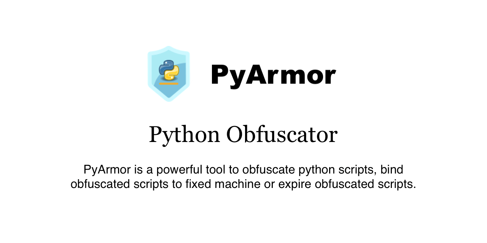
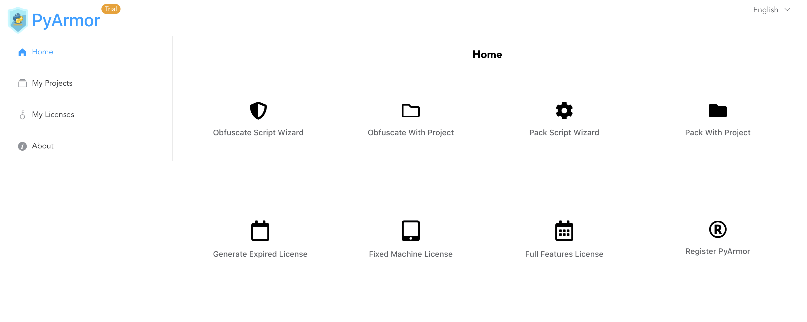

使用 PyArmor 包括 Python 代码
本文内容取自官方网站和文档汇总而来，特此说明！
保护 Python 脚本的工具，能够加密 Python 脚本，使用动态代码生成和交叉保护机制来保证加密脚本的安全性，保护运行时刻的 Python 代码不被泄露，设置加密脚本的有效期限，绑定加密脚本到硬盘、网卡等硬件设备。

1. 工具特点
使用之前，需要知道该工具有对应收费版本！
- [1] 无缝替换
经过 PyArmor 加密后的 Python 脚本也是一个正常的 Python 脚本，只需要一个额外的扩展模块 pytransform，就可以把原来的 Python 脚本全部替换成为加密脚本，按照以前的方式使用和运行这些加密脚本。
>>> from pytransform import pyarmor_runtime
>>> pyarmor_runtime()
__pyarmor__(__name__, __file__, b'\x06\x0f...')- [2] 动态加密
PyArmor 不仅仅能够加密 Python 脚本，即便在脚本被解释执行的运行过程中，一旦函数（代码块）执行完成，就会被重新加密，从更深层次保证了 Python 脚本的安全性。
- [3] 打包加密脚本
PyArmor 能够通过第三方工具 PyInstaller 把脚本加密之后直接打包发布。
- [4] 设置不同的许可方式
设置使用期限：PyArmor 可以为加密的脚本设置使用期限，过期之后加密的 Python 脚本就无法在继续运行。
设置允许运行的设备：PyArmor 可以绑定加密 Python 脚本到硬盘序列号、网卡的 Mac 地址、IP 地址等。
扩展其他认证方式：加密后的脚本对用户来说就是黑盒子，所以可以在 Python 脚本里面添加任意的认证方式。
2. 快速使用
安装和使用相对来说，还是比较简单的！
- [1] 安装
# 最简单的方式
$ pip install pyarmor
# 升级最新版
$ pip install --upgrade pyarmor
# 图形界面工具
$ pip install pyarmor-webui
$ pyarmor-webui# 完全卸载
$ pip uninstall pyarmor
$ rm -rf ~/.pyarmor
$ rm -rf ~/.pyarmor_capsule.zip
$ rm /path/to/project/.pyarmor_config- [2] 加密脚本
# 使用obfuscate命令
# 加密主脚本foo.py以及当前目录的所有其他.py文件，保存所有加密后的文件到dist目录
$ pyarmor obfuscate foo.py
# 加密单个模块
$ pyarmor obfuscate --exact foo.py
# 加密整个Python包
$ pyarmor obfuscate --recursive --output dist/mypkg mykpg/__init__.py- [3] 运行加密脚本
# 正常运行
$ cd dist
$ python foo.py- [4] 生成不同许可文件
# 使用hdinfo命令查看目标机器的硬件设备信息
$ pyarmor hdinfo
# 使用命令licenses创建新的许可文件
$ pyarmor licenses \
--expired "2018-12-31" \
--bind-disk "100304PBN2081SF3NJ5T" \
--bind-mac "70:f1:a1:23:f0:94" \
--bind-ipv4 "202.10.2.52" \
r001
# 使用新生成的许可文件加密脚本
$ pyarmor obfuscate --with-license licenses/r001/license.lic foo.py
# 再次运行加密脚本foo.py来测试新的许可证
$ cd dist
$ python foo.py- [5] 打包加密脚本
# 加密并打包foo.py脚本
# 并生成可以单独运行的可执行文件
$ pip install pyinstaller
$ pyarmor pack foo.py- [6] WebUI
# 运行pyarmor-webui打开网页版的图形界面
$ pip install pyarmor-webui
$ pyarmor-webui
3. 使用工程
使用工程主要适用于需要加密脚本很多的项目！
工程是一个包含配置文件的目录，可以用来方便的管理加密脚本。使用工程管理脚本的有下列优点:
- 可以递增式加密脚本，适用于需要加密脚本很多的项目
- 定制选择工程包含的脚本文件，而不是一个目录下全部脚本
- 设置加密模式和定制保护代码
- 更加方便的管理加密脚本
# 首先使用命令init创建一个工程
$ cd examples/pybench
$ pyarmor init --entry=pybench.py
# 创建一个工程配置文件 - .pyarmor_config
# 新创建的工程配置文件存放在 - projects/pybench
$ pyarmor init --src=examples/pybench --entry=pybench.py projects/pybench
# 切换当前路径到工程运行工程相关命令
$ cd projects/pybench
$ pyarmor info
# 使用build命令加密工程中包含的所有脚本
$ pyarmor build
# 当某些脚本修改之后，再次运行build名加密这些修改过的脚本
$ pyarmor build
# 使用命令config来修改工程的配置
$ pyarmor config --manifest "include *.py, prune dist, prune test"
$ pyarmor config --manifest "include *.py, include config.json"
$ pyarmor build
# 运行加密后的脚本
$ cd dist
$ python pybench.py4. 命令手册
简单列举一下，相关的命令和对应用处！
PyArmor 是一个命令行工具，用来加密脚本，绑定加密脚本到固定机器或者设置加密脚本的有效期。
- PyArmor 的语法格式
$ pyarmor <command> [options]- 常用的命令包括
obfuscate 加密脚本
licenses 为加密脚本生成新的许可文件
pack 加密脚本然后直接打包成为单独执行的文件
hdinfo 获取硬件信息- 工程相关的命令
init 创建一个工程，用于管理需要加密的脚本
config 修改工程配置信息
build 加密工程里面的脚本
info 显示工程信息
check 检查工程配置信息是否正确- 不常使用的命令
benchmark 测试加密脚本的性能
register 生效注册文件
download 查看和下载预编译的动态库
runtime 创建运行辅助包